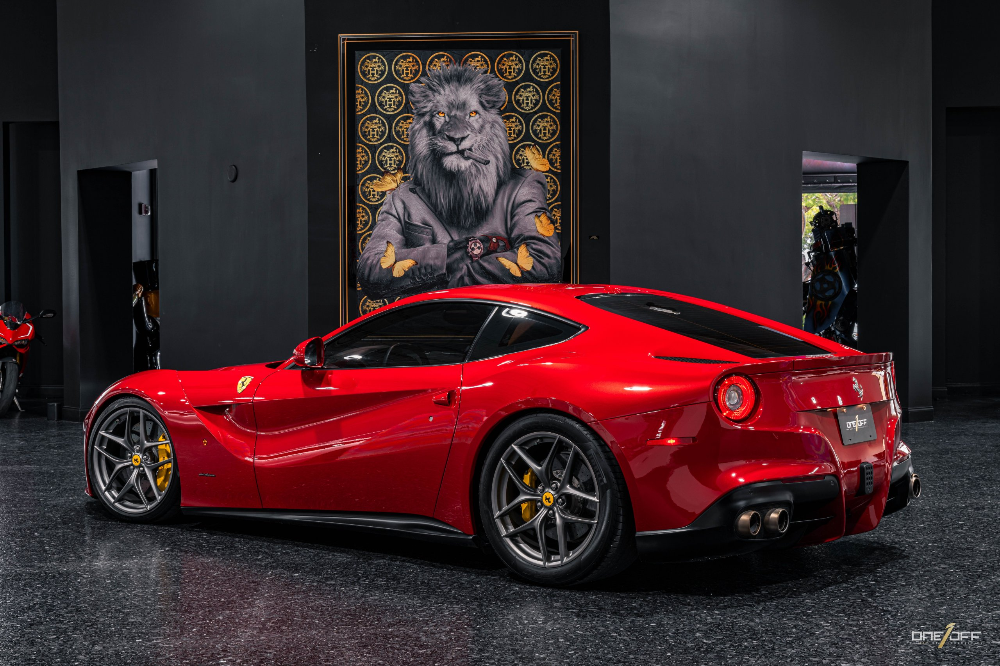

<!DOCTYPE html>
<html></html>
    <head\>
  <meta charset="utf-8">
  <meta name="descripion" content="supercars"/>
 <title>ANASCARS</title>
  <link rel="stylesheet" href="anas.css">


</style>
<link rel="stylesheet">


    </head>
<body>
    
        <h1>This website was created by Anas Amr and the content of this website is about </h1>
<p class="t1">Supercars</p>

<body>
</p>
    
<font color="black" size="6"

</font>


<p class="t2" >

   
supercars are high 
vehicles designed to offer extraordinary speed, power, and luxury. These cars are built with cutting-edge technology and stunning designs, making them the ultimate driving machines for enthusiasts and collectors.

 <u>What sets</u>a supercar apart from regular cars is its performance. Supercars are equipped with powerful engines, often producing over 500 horsepower, allowing them to reach speeds over 200 mph. They also feature advanced suspension and handling systems that make them perfect for both the road and the racetrack.
    
    Top brands like Ferrari, Lamborghini, Bugatti, and McLaren are known for creating some of the most iconic supercars. These brands focus on not only speed but also the aesthetics, creating vehicles with sleek, futuristic designs that turn heads wherever they go.


</p>

<body> <font size="6"
color="red"

</font>
<center><p class="t3">wepsite</p>
    <center>
<a href="https://www.ferrari.com/en-EN/formula1">Ferrari</a>
  <center><p style="color: red;font-size: 40px;">Ferrari Portofino</center> <font><
<video src="Ferrari Portofino - Official Video.mp4" controls></video>  
<details>   
    <FONt color="black"><p>Ferrari is a world-renowned Italian luxury sports car manufacturer, famous for producing high-performance vehicles. Founded in 1939 by Enzo Ferrari, the company originally began as Auto Avio Costruzioni, producing machines for racing. It became officially Ferrari in 1939. The brand is synonymous with speed, precision engineering, and cutting-edge technology, making it one of the most prestigious names in the automotive industry.

        Ferrari's vehicles are known for their elegant designs, powerful engines, and exceptional driving experiences. The company has a long and successful history in motorsports, particularly Formula 1, where it is one of the most successful teams ever. Over the years, Ferrari has produced iconic models such as the Ferrari 250 GTO, the Ferrari Enzo, and the more recent LaFerrari. 
        
        In addition to its car
    s, Ferrari represents a lifestyle and an aspiration, with a strong presence in fashion, technology, and luxury accessories. Ferrari cars are not just machines but symbols of success, exclusivity, and passion for automotive excellence. Today, Ferrari continues to innovate, blending performance with     sustainability, as they work on hybrid and electric technologies, ensuring the brand remains at the forefront of the automotive world.</p>
    <details>
<summary class="anas1"> ALL MODELS</summary>         >

<P>LA Ferrari APERTA<p>
  <p>ENZO Ferrari<p>
<p>F50</p>
<P>F12</P>
<p>GTO</p>
</details>  
</P>
</details>  
<FONT>
   <div class="x"><div>


,<body>


